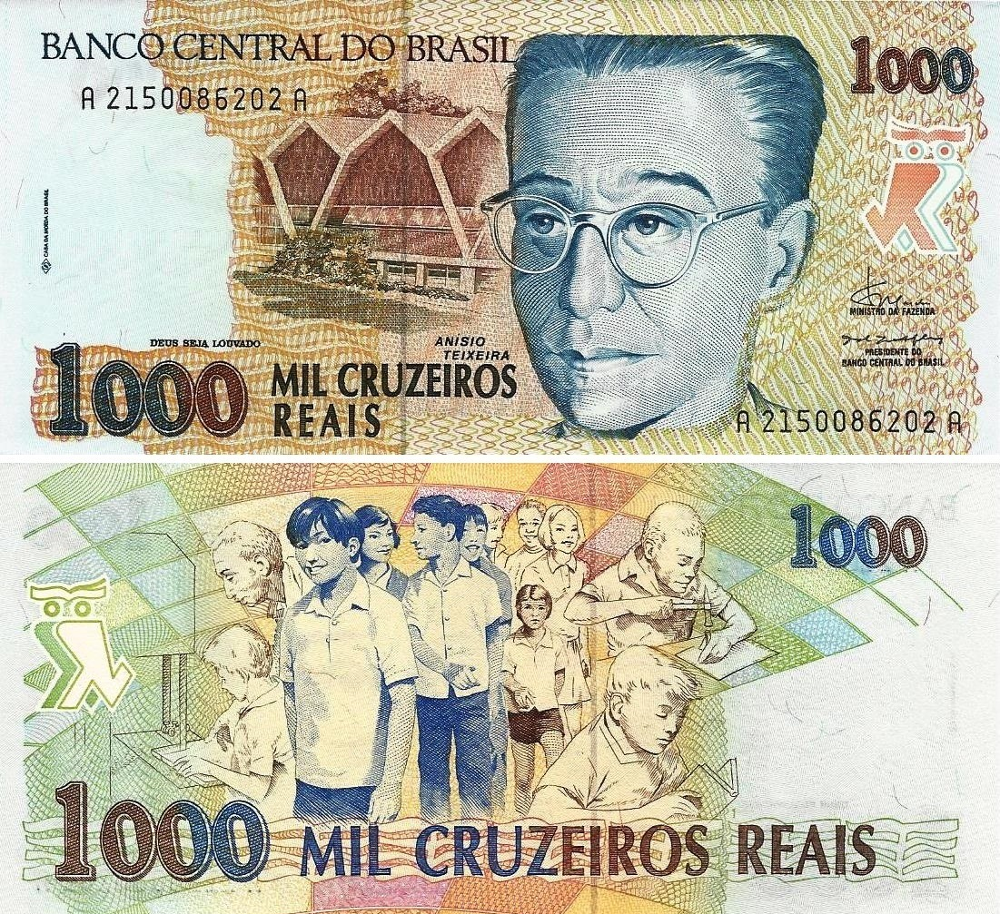

No Brasil em 16 de outubro o General João Batista Figueiredo é eleito presidente do Brasil pelo colégio eleitoral.
27 de outubro: A Justiça responsabiliza a União pela morte do jornalista Vladimir Herzog, ocorrida nas dependências do DOI-CODI.
27 de dezembro: Entra em vigor a nova Lei de Segurança Nacional.
Ernesto Geisel encaminhou ao Congresso uma emenda para acabar com o AI-5 (Ato Institucional Quinto).
Lula, que na época era sindicalista, virou manchete após liderar a primeira greve dos metalúrgicos do ABC Paulista no período militar, que contou com a adesão de mais de 500 mil trabalhadores e uma paralisação em uma fábrica de ônibus e caminhões.

A cédula de mil cruzeiros, moeda vigente no Brasil de maio de 1970 a fevereiro de 1986, foi lançada.
Em 25 de julho de 1978, nasceu o primeiro bebê de proveta: Louise Brown, no Hospital Geral de Oldhan, perto de Manchester, Inglaterra. O método, criado pelo cientista Robert Geoffrey Edwards, lhe rendeu o Nobel da Medicina, em 2010.
O método, criado pelo cientista Robert Geoffrey Edwards, lhe rendeu o Nobel da Medicina, em 2010.